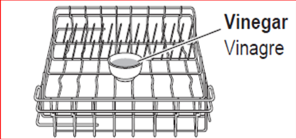
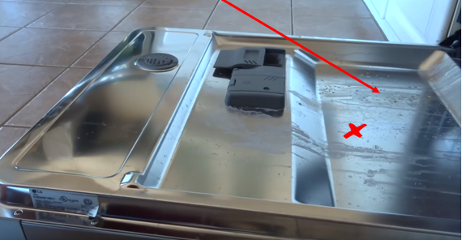

دورة تنظيف غسالة الأطباق — Tub Clean
دورة تنظيف الحوض — Tub Clean
اقرأ للعميل
«دورة تنظيف الغسالة من أهم حاجات التنضيف — بتشيل الجير من جوه الغسالة، وبتنضّفها من بواقي المسحوق والأكل. هنعملها مع بعض خطوة بخطوة.»
قبل دورة التنظيف:
لازم ينضّف فلتر الصرف ورشاشات المية الأول.
— خطوات الفلتر والرشاشات
لكل الموديلات: Basic · Steam · UV · Steam + UV
الطريقة الأولى — بالخل
{{ s.n }}
{{ s.t }}

✓ كوباية الخل في الرف السفلي

✗ متحطش الخل في التجويف اللي في باب الغسالة
الطريقة التانية — بملح الليمون (كل شهر)
{{ s.n }}
{{ s.t }}
Created by ICC QA & Training Team